- Create sample requests and specify details such as title and description
- Assign a due date to the request to indicate what day the request needs to be completed.
- Add samples to the request and specify Tank and Lot ID of each sample.
- Samples are automatically sorted by Tank in Ascending order.
- Upload a large list of samples by uploading a CSV file containing the Tanks and Lot IDs
- Specify sample size for each sample (250mL, 375mL or 750 mL) when adding samples individually or as an uploaded list.
- Mark samples as complete as you go through the sample list on each request. A 'time completed' timestamp will be recorded and displayed for completed samples.
- When a tank for a requested sample is empty and no sample can be retrieved, this can be indicated on the request by selecting the 'Empty Tank' icon.
- Erroneous or unnecessary samples can be deleted from requests by selecting the trash icon
- Once all samples have been collected, the request can be closed out by selecting the 'close out request' icon.
- When viewing the requests list, the requests are separated into two groups 'Incomplete Requests' and 'Completed Requests'.
- Each completed request will display a 'time completed' timestamp.
- When viewing the requests list, completed and/or incomplete requests can be shown or hidden by selecting or unselecting 'show completed' and 'show incomplete' filter options.
- The Sample Schedule feature allows for the user to view requests in a weekly calendar view which is a visual indicator of when each request is due.
- Navigate easily between the Sample Schedule, Request List, and create new requests from the side navigation menu
- Requests can be set as 'recurring' which allows the user to set a recurrence interval (1 to 7 days) which will create a duplicate copy of the request including all associated samples with a due date one interval length in the future (i.e. 1 day later, 2 days later, etc) 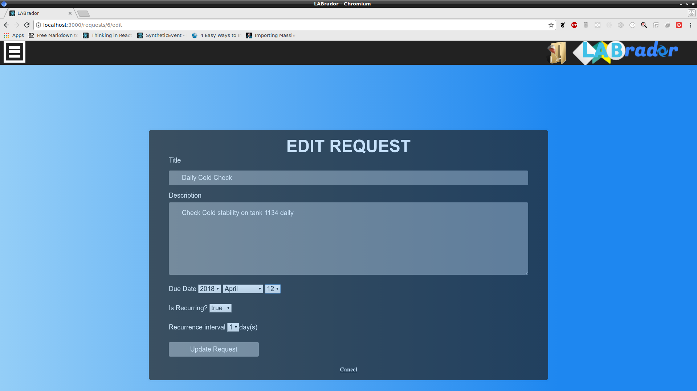
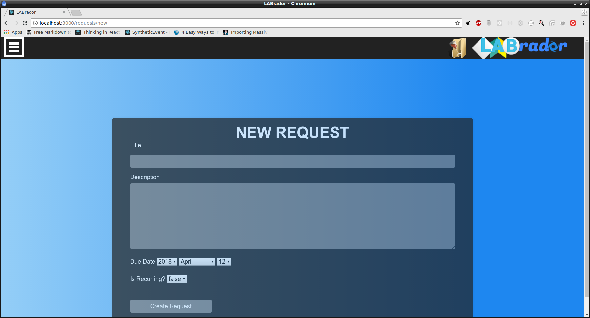
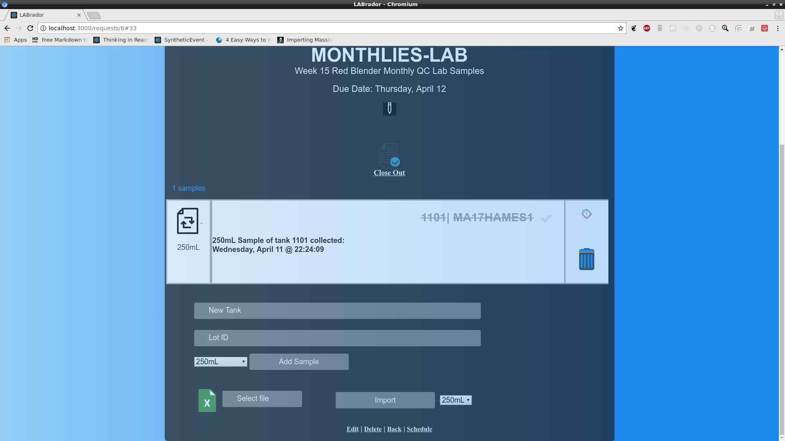
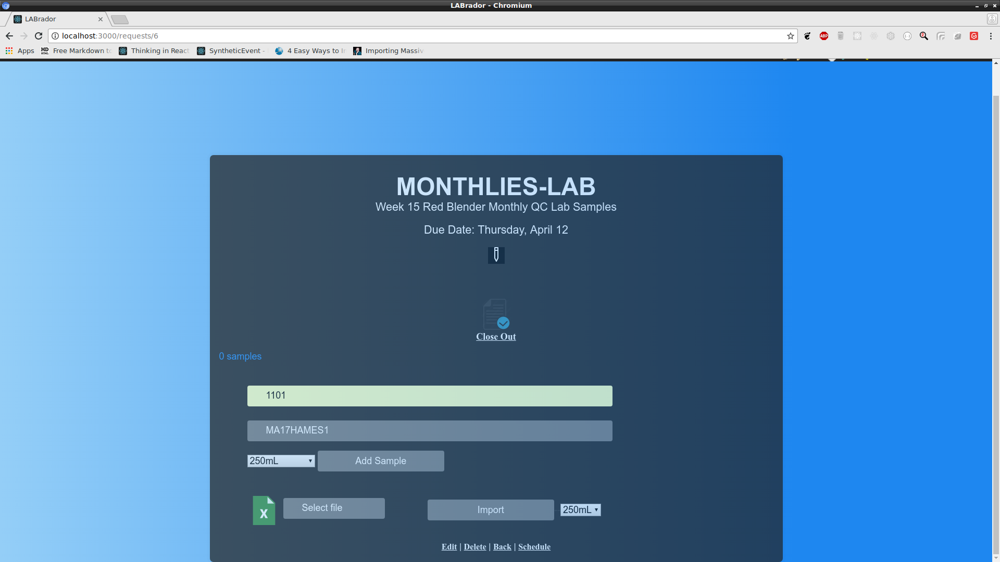
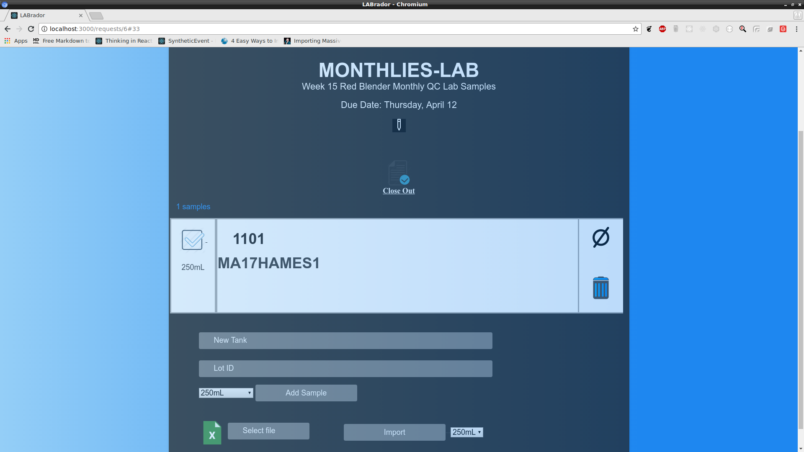


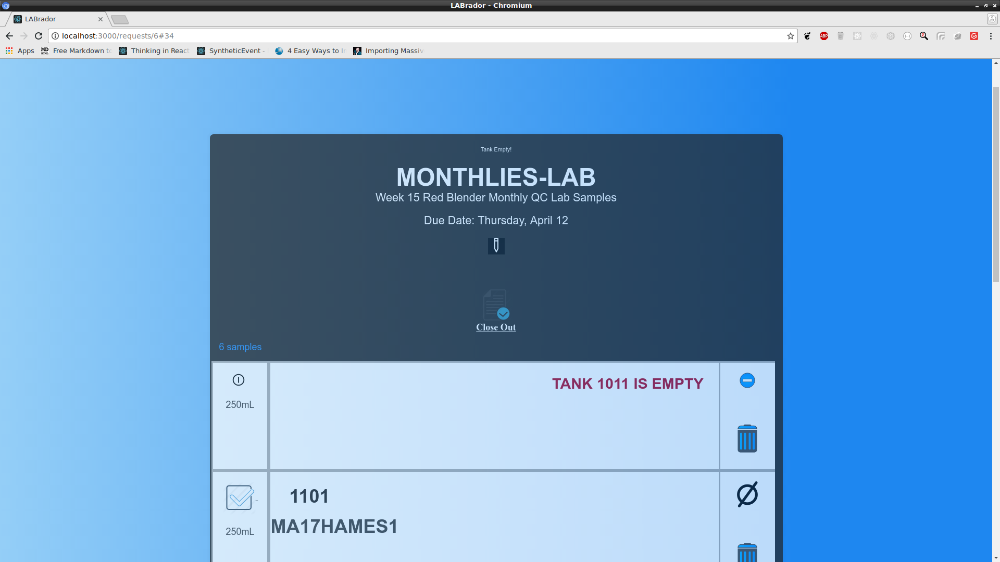
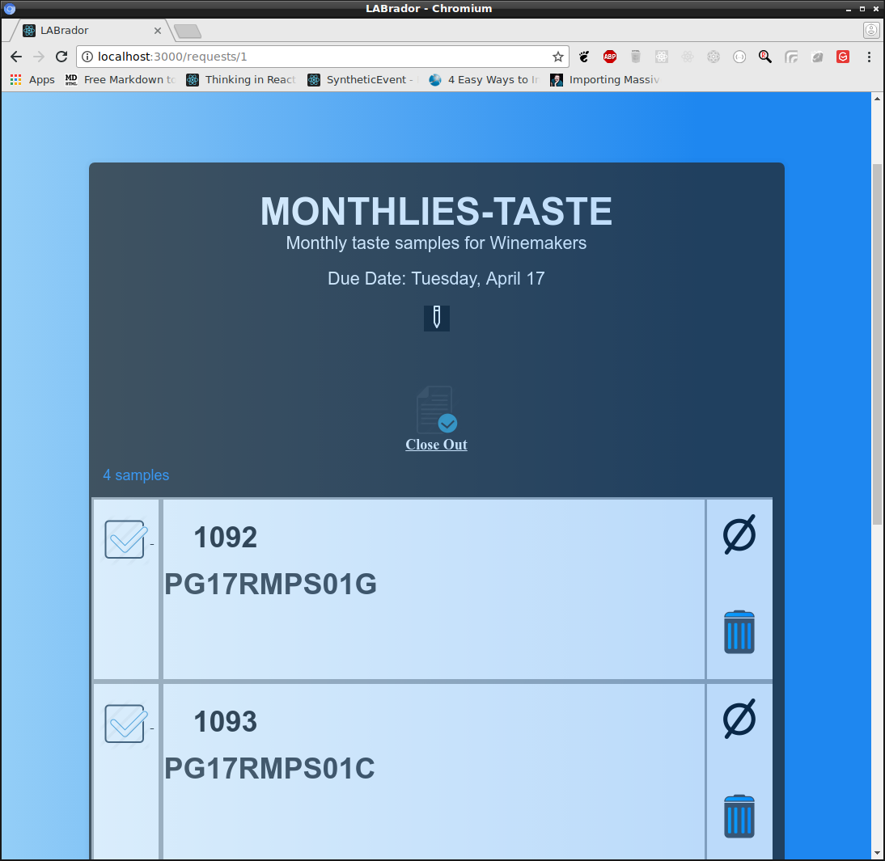

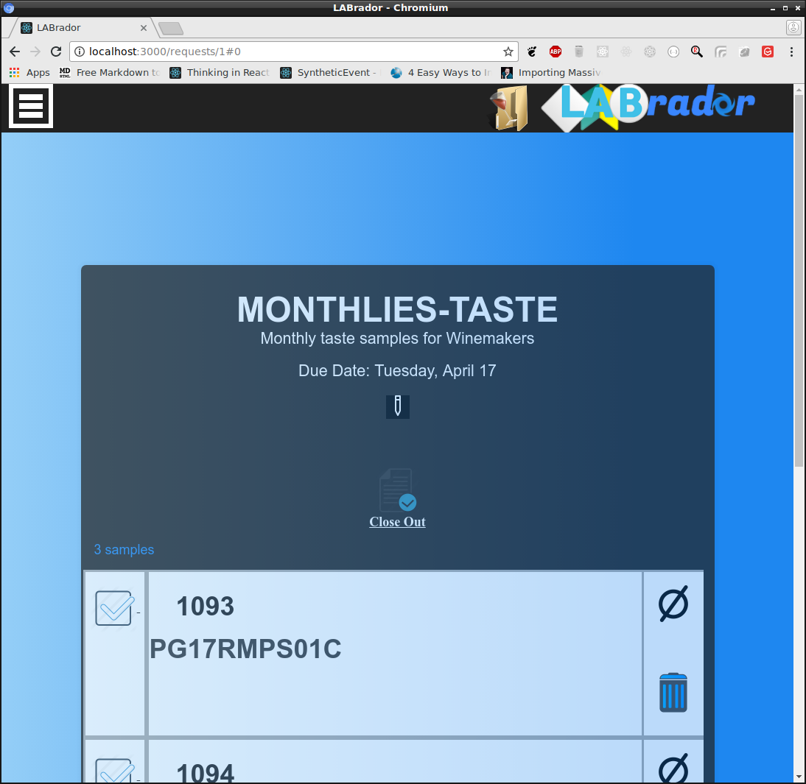
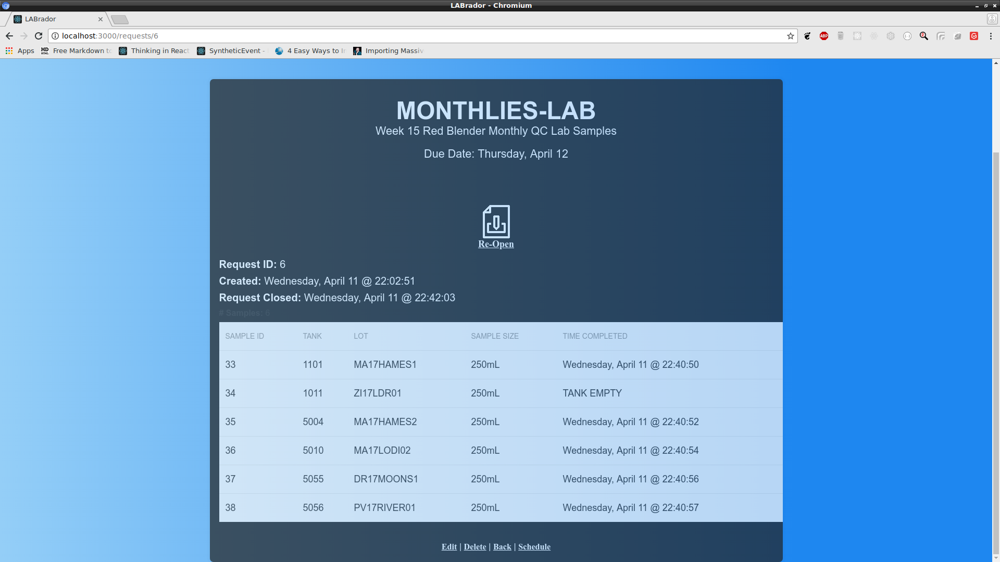
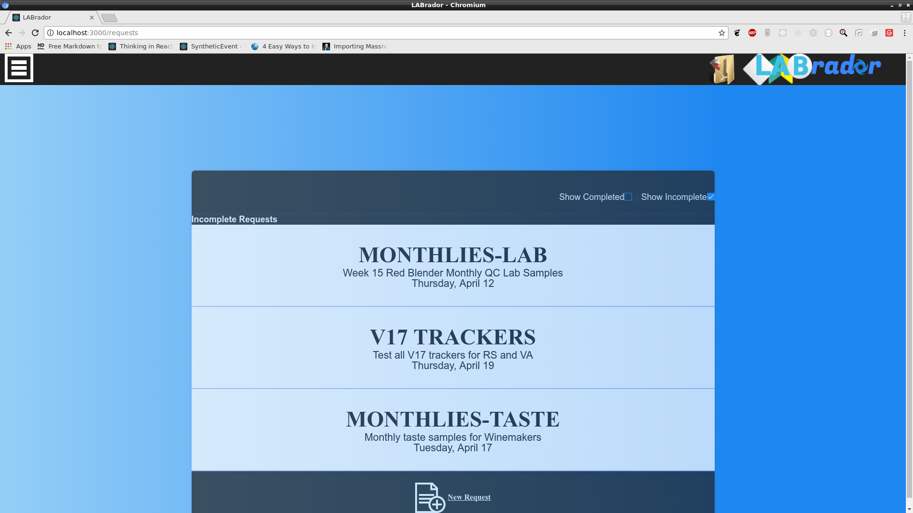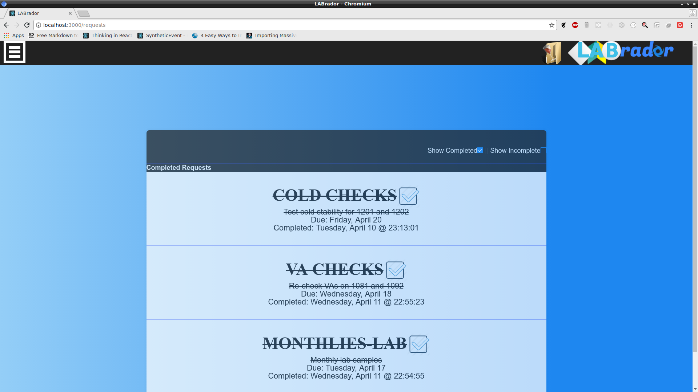
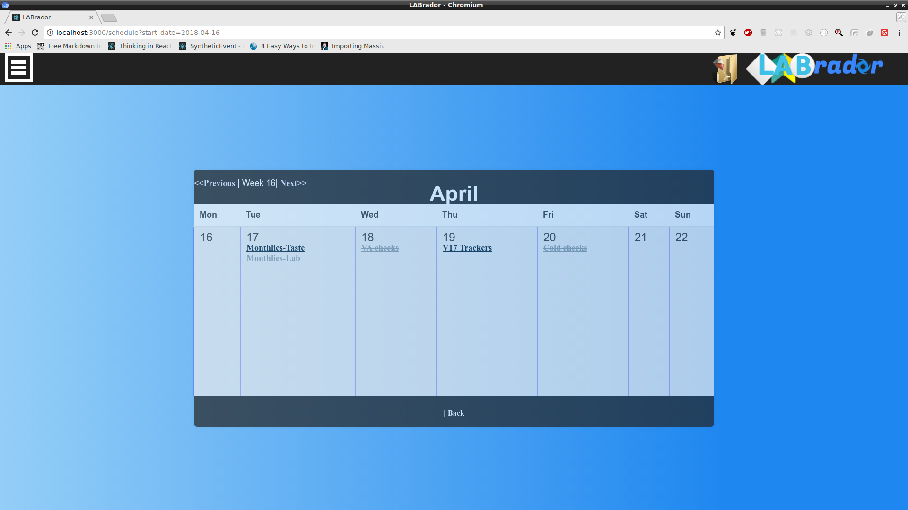